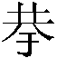
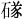

太尉司馬懿……太子舍人黃史嗣以為不宜改。（卷一四《禮志一》，第330頁）
王仲犖《長編》“太子舍人黃阙以為不宜改”條：“黃”字下缺文，《元龜》五六三作“史嗣”二字。
《校勘記》：各本並脫“史嗣”二字，據《元龜》五六三補。（第372頁）
議：《長編》説明底本作“太子舍人黃阙以為不宜改”是對的，但《校勘記》根據《元龜》把所“阙”的一個字補成“史嗣”二字，就大錯特錯了，因為《長編》所引錄《元龜》不可信據。
竊以為本文應當根據早期版本整理成“太子舍人黃□以為不宜改”，“黃”字下面的“□”，表明史書殘缺一字。就筆者所見，宋本《元龜》五六三作“黃史闕”；其中“黃”是正文，占一格；“史闕”以小注的形式二字並列，占一格。由此可知，北宋人所據的《宋書》必然是“黃□”，所以《元龜》的編者才在“黃”字下面的一格注明“史闕”。上引《長編》及《校勘记》所謂《元龜》作“史嗣”者，出自明刻本，明刻本不僅誤以“史闕”二字為人名，又將“闕”字變成“嗣”。
附带説一下，《校勘記》誤信明刻本《元龜》，是因為當时还没有宋本《元龜》可作参考；至於近年出版的《元龜》校訂本以明刻本為底本而仍沿襲舊文作“黃史嗣”，則純屬因忽略宋本而出現的失校現象。
入門不得終禮者四。（同上，第351頁）
王仲犖《長編》：“入門”，《三國志·劉劭傳》作“及門”。裴注引王彪之與殷浩書作“入門”。不改，不出校。
議：傳世本《三國志》作“及門”者，屬於誤文，當據本文校正。“入門”云云，典出《禮記》卷一九《曾子問》：“曾子問曰：‘諸侯旅見天子，入門不得終禮廢者幾？’孔子曰：‘四。’”
秉蘭草，拂不祥。（卷一五《禮志二》，第386頁）
王仲犖《長編》“拂不祥”条，
議：“拂”、“祓”通用，無所謂彼是此非。《左傳·成公十三年》“巫先祓殯”
至桓帝永興二年復令刺史二千石行三年服……至延熹元年，又皆絶之。（同上，第387頁）
議：局本作“二年”者，當本於《後漢書》卷七《桓帝紀》所载延熹二年事云：“三月，復斷刺史二千石行三年喪。”
故成風顯夫人之號，文公服三年之䘮。（同上，第394頁）
《校勘記》：“文公”各本及《南史》、《晉書·禮志》作“昭公”。《宋書·徐廣傳》作“僖公”。《通典·禮典》作“文公”。
議：所謂《通典》作“文公”者，見於卷八一《禮四十一·凶三·天子為庶祖母持重服議》載徐廣議：“《左氏春秋》，母以子貴。成風稱夫人，文公服三年之喪。”而宋本《通典》卷八〇載何澄等議：“《春秋》之義，母以子貴。既稱夫人，禮服宜從正。故成風著夫人之號，昭公服之三年。”其文仍作“僖公”。故《校勘記》應說明改字的依據是《通典》卷八一。同理，本書卷五五《徐廣傳》的《校勘記》也應當如此。
今貴妃是秩，天之崇班，理應立此新廟。（卷一七《禮志四》，第477頁）
議：本書卷八〇《孝武十四王·始平孝敬王傳》亦有此文，其文作“今貴妃蓋天秩之崇班，理應創立新廟”。兩相比較，本文似有誤倒：“是”可能是“蓋”的訛字，“秩天”可能是“天秩”的顛倒。“天秩”一詞出於《書·皋陶謨》，謂上天安排的品秩等級，晉葛洪《抱樸子外篇》卷四《廣譬》云：“天秩有罔極之尊，人爵無違德之貴。”葛文贊“天秩”之極尊，本文贊“天秩”之崇班，可以比類。
其諸妖孽，可粗依法令，先去其甚。（同上，第483頁）
校：“粗”，百衲本作“伹”，嘉靖本、北監本、毛本、殿本、局本作“俱”。《通典·禮典》、《元龜》卷五七五作“粗”。按作“粗”是，今據改。（491頁）
《宋書校議》：《晉書·禮志上》正作“粗”，校改是也。
議：“伹”字未必是訛文。早期版本往往保留古字，例如本書《樂志一》的“哥”，就是“歌”之古字，百衲本如是，今本不改為通行字，可從。竊謂“伹”字也不必校改。《說文解字》八上《人部》：“伹，拙也，從人，且聲。”段玉裁注：“按此字千餘切，與粗同紐，即今粗笨字也。”可惜段氏未見本文的“粗”字在百衲本中作“伹”。“伹”為“粗”之古字，傳世文獻中難得一見，百衲本為此提供了罕見的一例，改掉實在可惜。如果一定要改古字為今字，祗須在整理《宋書》的凡例中列出漢字規範化的表格，不宜在《校勘記》中斷言“伹”是“粗”的錯字。
孝武大明二年又以孔邁為奉聖侯。邁卒，子荂嗣。（同上，第485頁）
《校勘記》：“荂”三朝本、北監本、毛本、殿本作“莽”，局本作“荂”。按《通典·禮典》作“”，注云：“翊俱反。”當即“荂”字之異文。今定作“荂”。（第491頁）
議：定作“荂”是可以的，但“翊俱反”切不出“荂”的字音，“翊”字必然有誤；今檢北宋本《通典》卷五三，此字作“詡”，殿本《通典》及《通志》也均作“，詡俱反”，這就對了。
《鬼谷子》云：“鄭人取玉，必載司南，為其不惑也。”（卷一八《禮志五》，第496頁）
王仲犖《宋書校勘記長編》“為其不或也”条云：“或”，三朝嘉靖、北監、毛本、殿本、局本作“惑”。按或惑古今字，今改從惑。
漢制，大行载輼輬车，四輪。其饰如金银，加施組連璧，交絡……长舆车等。（同上，第501頁）
王仲犖《長編》“交路”條：“路”，三朝補、毛本同本本。北監、殿本、局本及《續漢書·輿服志》作“絡”，是。逕改不出校。
不顯洪烈，永介休祜。（卷二〇《樂志二》，第579頁）
王仲犖《長編》“不顯洪烈”條：北監、毛本、殿本、局本作“丕”。逕改不出校。
山出黃雀亦有羅，雀以髙飛奈雀何？為此倚欲，誰肯礞室。（卷二二《樂志四》，第640頁）
議：這是漢鼔吹鐃歌《艾如張曲》的一段，其中“礞”字可疑。逯欽立輯校的《漢詩》有注云：“‘礞’當作‘’，古‘墜’字。董若雨曰：‘礞當是字之誤。’”驗之於其他古籍，董、逯之說可從。《漢書》卷二六《天文志》有“星至地則石也”一句，如淳注：“亦墜也。”又卷一百《敘傳》有“薄姬魏”一句，顏師古注：“，古墜字。”“”為隋唐前後的《玉篇》、《廣韻》等辭書所收，可見此字通行於六朝。“礞”為礦石之名，於義無當，當為“”的形訛。
皇道失，桓與靈。閹宦熾，羣雄爭。（同上，第644頁）
“閹官”一詞，屢見於東漢以來的史書，茲略引數例。例如《後漢紀》卷一四《孝和皇帝紀》載永元十四年事云：“封中常侍鄭衆為列侯……天子常與謀國事。閹官専權，自衆始焉。”早先的鄭衆，祗不過是“閹宦”中的一員；自從有了“大長秋”這種職官，又加封為列侯，才得稱為專權的“閹官”。又如陳壽所撰《三國志》卷六《魏志·董卓傳》：“大將軍何進與司隸校尉袁紹謀誅諸閹官，太后不從。”其中“諸閹官”僅指專權的中常侍張讓等人。又卷五八《吳志·陸抗傳》云：“時何定弄權，閹官預政。”句中的“閹官”，就是從“閹宦”中被提拔上來的“何定”。此外，北齊魏收所撰《魏書》卷九四有《閹官列傳》，傳中所記宗愛等二十五人，都是“閹宦”中出人頭地的人物。
漢第十曲《有所思》，今第十曲《應帝期》，言曹文帝以聖徳受命，應運期也。（同上，第646頁）
御史中丞何承天論渾象體曰：詳尋前説，因觀渾儀，研求其意，有以悟天形正圓，而水周其下。（卷二三《天文志一》，第677頁）
議：“而水周其下”一句，《隋書》卷一九《天文志上》作“而水居其半，地中髙外卑，水周其下”，唐瞿曇悉達撰《唐開元占經》卷一引“守太子率更令何承天論渾象體”與《隋志》相同；蓋“而水”之下，傳寫者跳脫“居其半地中髙外卑水”九字。如果沒有上引九字，“水周其下”的“其”就不是指“地”的周邊而是指“天”的四周了，這當然不符合渾象論的原意；渾象論的意思是，地的四周都是水，即下文所謂“四方皆水，謂之四海”。
極之立時，日行地中淺，故夜短，天去地髙，故晝長也。極之低時，日行地中深，故夜長，天去地下淺，故晝短也。（卷二三《天文志一》第680頁）
議：“立”，《太平御覽》卷二作“高”。中華書局校點本《晉書》、《隋書》均據《御覽》改作“極之高時”，可從。
又明年，諸葛亮入秦川，據渭南，司馬懿距之。（同上，第682頁）
議：“渭南”，當從《晉書·天文志》校點本標作“渭南”。此非南北朝時期“渭南縣”的専名
又，本卷下文“是年四月，諸葛亮據渭南”、“是时諸葛亮據渭南”（第683頁）、“蜀後主建興十二年，諸葛亮帥大众伐魏，屯于渭南”
按占，熒惑入南斗，三月，吳王死。一曰：“熒惑逆行，其地有死君。”太元二年權薨，是其應也。（同上，第688頁）
議：原文當校點成：“按占：‘熒惑入南斗，三年吳王死。’”第一，從吳赤烏十三年（西元250）五月熒惑入南斗起，到太元二年（252）四月孫權病死為止，首尾正好是三年，本文“三月”的“月”肯定是“年”的訛字。第二，“熒惑入南斗，三年吳王死”不是史家的敘事之文，而是星占書中的內容，應當加引號；如果這兩句不是占語，“吳王”就應當隨着上文的稱謂作“吳主”；占語作“吳王”者，泛指吳地之王，因為吳地屬於南斗的分野。《晉書》校點本將“熒惑入南斗，三月吳王死”視為占書之文，甚是；但也沒有注意到“三月”不符合史實，故竊謂《晉書》亦當校改為“三年”。
天市一名天府，一名天子禖，帝座在其中。（卷二四《天文志二》，第700頁）
《宋書校議》：“天子禖”，《晉書·天文志中》作“天子旗”。
議：當以“旗”字為是。《史記》卷二七《天官書》云：“旗中四星曰天市。”張守節《正義》曰：“天市垣二十二星，在房心東北，主國市聚交易之所，一曰天旗。”《晉書》卷一一：“天市垣二十二星，在房心東北，主權衡，主聚衆，一曰天旗庭，主斬戮之事也。”
熒惑大而赤色；光不明，赤而小，與小星無别，皆漢家衰亡之异也。（卷二七《符瑞志上》，778頁）
議：這是太史丞許芝又一次向魏王曹丕上言天文祥瑞的內容。底本作“赤家”並非誤文，不當據後出版本改為“漢家”。
漢、魏之際，一般人以“漢家”稱漢朝，屬於社會常語；許芝以“赤家”
吳孫晧天紀三年八月，建業有鬼目菜生工黃耇家，依縁棗樹。長丈餘，莖廣四寸，厚三分。（卷三二《五行志三》，第928頁）
《宋書校議》：“三分，《晉書·五行志中》作“二分”。
議：宋、晉二《志》的依據是《三國志》。《三國志》卷四八《吳志·孫晧傳》作“三分”，《建康實錄》卷四亦作“三分”，可知《晉志》有誤。
晉惠帝永康元年，帝納皇后羊氏。后將入宫，衣中忽有火。……虽末還在位，然憂逼折辱，終古未聞。此孽火之應。（同上，第934頁）
王華寶《漢魏六朝語詞考論》：“末還”不辭，《晉書·五行志》記作“來還”，歸來、回來義，似是。“來還”是常見詞，《宋書》亦有用例，如《五行志五》：“息女可，年二十，自云：‘上天來還，得徵瑞印綬，當母天下。’可參。”
議：“末還”未必不辭。漢魏六朝之“末”，或猶今語“終究、最後”，
2009年6月稿，载《文史》2013年第一辑